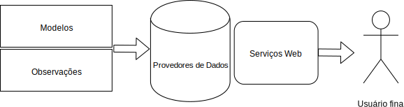

Como montar um “App” de clima/tempo com Python e dados abertos
Filipe Fernandes
Out 27, 2019
whoami
Filipe Fernandes
- Oceanógrafo Físico
- Encanador de Dados
- Faxineiro de Código
- Babá de Teste Integrado Contínuo
- Apertador do “botão verde” no conda-forge
Outras versões dessa palestra: padrões
Outras versões dessa palestra: Interoperabilidade de Dados/Modelos
IOOS

IOOS em números

Galeria de Código

Falei de padrões né!?


- evite soluções específicas
- os padrões devem ser aplicados nos provedores de dados
[F]indable [A]ccessible [I]nteroperable [R]eproducible
Simplificando

Serviços Web do IOOS
| Tipo de Dados | Serviço Web | Resposta |
|---|---|---|
| Dados in-situ (bóias, estações, etc) |
OGC SOS | XML/CSV |
| Dados em grade (modelos, satélite) | OPeNDAP | Binário |
| Images raster | OGC WMS | GeoTIFF/PNG |
ERDDAP “novo” padrão da comunidade.
Sensor Observation Service (SOS)
(OGC SOS)
GetCapabilities: metadadosDescribeSensor: informação detalhada dos instrumentosGetObservation: os dados
SOS example
url = (
"https://opendap.co-ops.nos.noaa.gov/ioos-dif-sos/SOS?"
"service=SOS"
"&request=GetObservation"
"&version=1.0.0"
"&observedProperty=water_surface_height_above_reference"
"&offering=urn:ioos:station:NOAA.NOS.CO-OPS:8454000"
"&responseFormat=text/csv"
"&eventTime=2018-07-04T00:00:00Z/2018-07-05T00:00:00Z"
"&result=VerticalDatum==urn:ogc:def:datum:epsg::5103"
"&dataType=PreliminarySixMinute"
)Com uma Pytada de Python
url = (
f"https://opendap.co-ops.nos.noaa.gov/ioos-dif-sos/SOS?"
f"service=SOS&request={request}"
f"&version={version}"
f"&observedProperty={variable}"
f"&offering={buoy}"
f"&responseFormat={response}"
f"&eventTime={yesterday:%Y-%m-%dT%H:%M:%SZ}/"
f"{today:%Y-%m-%dT%H:%M:%SZ}"
f"&result=VerticalDatum=={vdatum}"
f"&dataType={data_type}"
)OPeNDAP/Climate and Forecast
(CF)
Metadados CF
float temp(ocean_time, s_rho, eta_rho, xi_rho);
temp:standard_name = "sea_water_potential_temperature"
temp:units = "Celsius";
temp:coordinates = "lon_rho lat_rho s_rho ocean_time";
double s_rho(s_rho);
s_rho:long_name = "S-coordinate at RHO-points";
s_rho:positive = "up";
s_rho:standard_name = "ocean_s_coordinate_g1";
s_rho:formula_terms = "s:s_rho C:Cs_r eta:zeta depth:h
depth_c:hc"Web Mapping Service
(OGC WMS)
- Interface HTTP simples para requerer images geo-referenciadas sobre um mapa
- Um pedido WMS define uma camada geográfica e uma área de interesse a ser processada
- A reposta ao pedido é um ou mais mapas images geo-referênciadas (retornadas como JPEG ou PNG)
ERDDAP
O servidor de dados que a comunidade pedia
- Retornos flexíveis:
.htmltable, ESRI.ascand.csv, Google Earth.kml, OPeNDAP binary,.mat,.nc, ODV.txt,.csv,.tsv,.json, and.xhtml - RESTful API “de graça” para acessar os dados
- Padroniza as datas e tempo em buscas e retornos
- Redução de dados “no servidor”
Existem muitas partes móveis

Catalog Service for the Web
(CSW)
- Uma fonte única para encontrar os endpoints
- Tem interface Python:
owslib.csw.CatalogueServiceWeb - Permite filtros avançados:
owslib.fes
Como ele é alimentado

Procurando os serviços web
>>> from geolinks import sniff_link
>>> sniff_link("https://host/wms?service=SOS")
'OGC:SOS'
>>> sniff_link("https://host/wms?service=OPeNDAP:OPeNDAP")
'OPeNDAP:OPeNDAP'
>>> sniff_link("https://host/wms?service=WMS")
'OGC:WMS'
>>> sniff_link("https://host/data/roads.kmz")
'OGC:KML'
>>> sniff_link("https://host/data/roads.kml")
'OGC:KML'Juntando Tudo: NHC
Encontrando estações meteorológicas no caminho de previsão de um furacão.
Juntando Tudo: Avaliando Performance de Modelos
Checando modelos de altura de ondas
Juntando Tudo: ERDDAP App
Finalmente o notebook que prometi no título!

Portal SECOORA
Sumário
- Padrões, serviços web e catálogos permitem servir dados de forma “unificada”
- Python é talvez a única linguagem científica+web+dashboard+scripting que nos permite criar protótipos de visualização tão rapidamente unindo tantas tecnologias diferentes
- Widgets nos permite democratizar a explorações dos dados
Perguntas?
(ocefpaf)
https://ocefpaf.github.io/2019-10-27-PyBr-talk